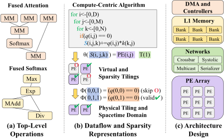
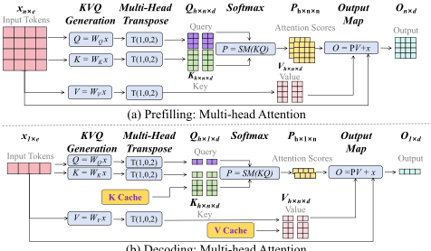
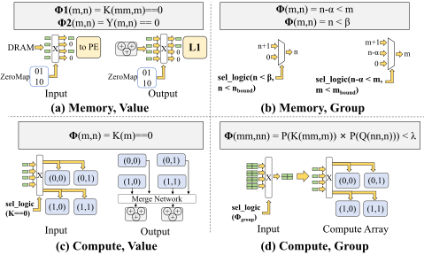
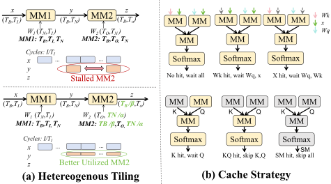
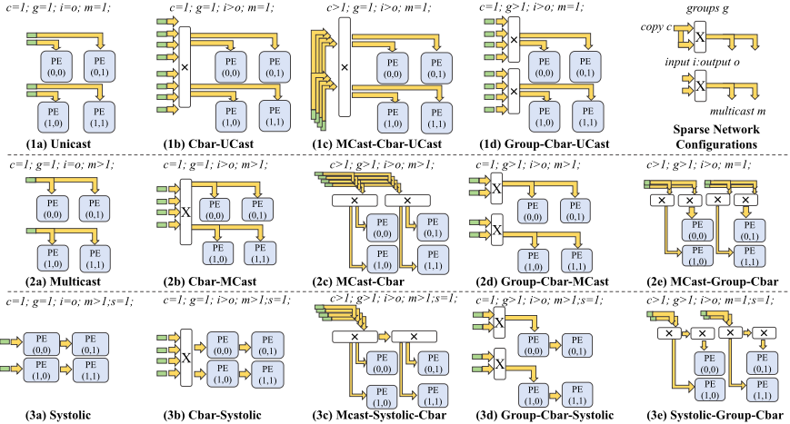
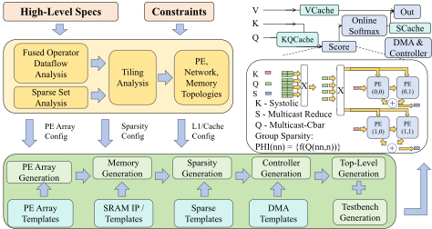
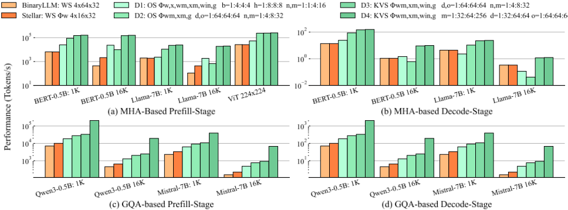
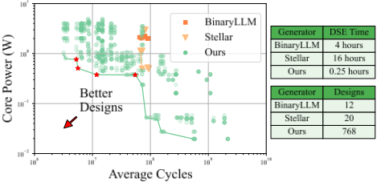
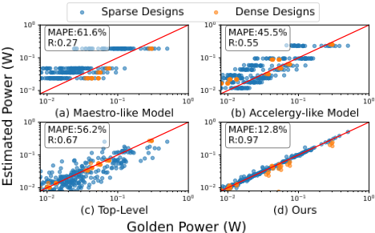
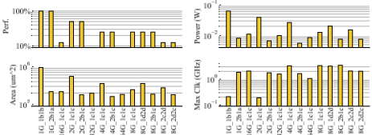

FSGen: Agile Fused and Sparse Accelerator Generator with Accurate Power Model for LLM Applications
FSGen：面向 LLM 应用的敏捷融合与稀疏加速器生成器及精确功耗模型
简介
论文针对 LLM 定制加速器缺乏端到端设计空间探索（DSE）方法学的问题，指出先前硬件生成器存在三大局限：设计空间可配置性不足（缺少融合算子数据流与多层次稀疏性支持）、不支持自动 RTL 生成与 QoR 验证、早期功耗模型因假设每操作功耗恒定而失准。作者提出开源敏捷框架 FSGen：以数学化的融合算子数据流与和数据流正交的稀疏映射为高层表示，基于 Chisel 自动生成可综合 Verilog RTL，并构建原语级 XGBoost 早期功耗模型驱动 DSE。在 TSMC 40nm 综合实现下，其设计较 BinaryLLM、Stellar 等先前工作在相近 PPA 下获得 1.4× 能效或 10× 性能提升，Pareto 最优设计 FoM 高 58×；功耗模型误差 12.8%、R=0.97。其'生成器 + 早期 ML PPA 估算驱动架构探索'的方法学对团队的 IP 架构探索与设计自动化有借鉴价值，但论文主题本身不属于存储/互连 IP 领域。
问题
现有 LLM 加速器硬件生成器与设计探索工具的局限：(1) 设计空间可配置性不足——融合算子数据流（可大幅减少中间 tensor 存储）未被充分探索，算法级与硬件实现级的稀疏性配置受限，无法在统一框架内比较多种稀疏类型；(2) 对实现的支持不足——许多 LLM 设计探索工具不支持自动 RTL 生成，用户无法在 FPGA 或数字 ASIC 上验证设计与 QoR；(3) 早期估算器精度不足——现有架构探索工具的功耗模型过度简化（假设每操作功耗/能量恒定或仅有少数状态），而实际能量对输入活动高度敏感。整体上缺乏端到端的高效 DSE 方法学。
方法
提出 FSGen 框架：(1) 用数学化的融合算子数据流表示（多个共享循环变量的完美循环嵌套）刻画 MHA/GQA、FFN、KVQ、归一化等 LLM 层，支持非完美嵌套循环与多数据流拓扑，覆盖 prefill/decode 两阶段并可重构；(2) 将稀疏性定义为与数据流正交的稀疏集合与映射（value-based 与 group-based），映射到多级稀疏网络（group 级 + value 级 crossbar，共 14 种网络拓扑），并支持 window attention、query-key pruning 等稀疏模式；(3) 基于 Chisel 自动生成 Verilog RTL，含异构 tiling、多 tensor 中间缓存、online softmax 等优化，暴露 AXI 编程接口，并配套软件编译器与 kernel 级/全层 testbench；(4) 建立基于原语（PE、网络、存储）的层次化功耗/面积模型，用周期精确架构仿真器采样信号翻转率与零比特数作为特征，采用 XGBoost 训练，支撑早期 DSE 与 Pareto 分析。
关键结果
在 700mW 功耗约束下性能比先前生成器好 10×；在相同 8×10^7 周期数下功耗好 1.4×
Pareto 最优设计的 FoM（tokens/s/W/mm²）比先前工作高 58×
prefill 阶段最高达 120k token/s，MHA decode 阶段最高 110 tps
早期功耗模型误差 12.8%、R=0.97，优于 Maestro、Accelergy 与顶层 ML 回归器
每个原语约 256 个训练数据点，约 30 分钟数据采集、数秒完成训练；训练集创建约 30 分钟
DSE 覆盖 768 个设计（3 种循环序 × 8 种 tiling × 多种 compute-value/compute-group/memory 稀疏映射），稀疏网络设计空间共 14 种拓扑
验证集为约 20 个 dense 与 200 个 sparse 生成设计
创新点
相比 TensorLib/Rubick、BinaryLLM、Stellar 等先前生成器：(1) 首次在统一框架内支持融合算子数据流（非完美嵌套多循环）与算法/硬件两级、value/group 多类型稀疏性，且稀疏表示与数据流数学上正交，可统一比较多种稀疏类型；(2) 提供从高层规范到可综合 RTL 的端到端自动生成（含编译器与 testbench），弥合探索工具与实现之间的断层；(3) 提出基于原语级信号翻转/零比特特征的 ML 功耗模型，克服先前工具每操作功耗恒定的简化假设，精度更高且原语模型可组合泛化到全设计。
团队参考意义
相关度级别：medium
命中能力域：2.1 IP 架构与微架构 | 2.7 EDA/验证自动化与 AI 辅助
理由：论文主题是 LLM 加速器的数据流/稀疏性设计与自动生成，不属于团队的存储/互连 IP 产品域，未直接命中 2.2~2.6 的 RTL 实现、时序/物理与验证技术栈。但其核心方法学与团队能力域高度同构：'高层表示 + 生成器自动产出可综合 RTL + 原语级 ML 早期 PPA 模型驱动的 workload-driven DSE' 正对应 2.1 中'面向 PPA 的架构权衡、workload-driven 性能建模'的方法论，其自动化生成流程与 ML 辅助早期估算对应 2.7 的'流程自动化、AI 辅助设计'。因此属于方法可借鉴但不直接命中团队技术栈的 medium 级别。
建议动作：作为方法参考存档
中文全文
arXiv:2608.09252v1 [cs.AR] 2026年8月10日
FSGen: Agile Fused and Sparse Accelerator Generator with Accurate Power Model for LLM Applications
Jay Zhe-An Mok, Qijun Zhang, Zhiyao Xie *
香港科技大学，香港
{jzmok,qzhangcs}@connect.ust.hk,eezhiyao@ust.hk
他们还提出了一种机器学习（ML）引导的设计探索策略。Stellar [7] 是一个面向矩阵乘法内核的稀疏脉动阵列生成器框架，支持数据压缩以及多种不同的细粒度稀疏数据流。然而，当前框架存在如下所述的若干局限性。
设计空间可配置性有限。先前的硬件生成器 [4, 7] 缺失了一些重要的候选设计。1) 融合运算数据流通过融合多个内核大幅减少中间张量存储，常被用于加速大语言模型（LLM）运算，但至今仍未得到充分探索。数据流在定制化 AI 芯片的功耗、性能与面积（PPA）权衡中至关重要 [11, 13]。2) 算法层面与硬件实现层面的稀疏性可配置性同样有限。稀疏性对于优化能耗与性能十分重要。先前工作 [7] 仅支持一种或有限的一组稀疏性与稀疏网络，无法在统一框架内比较多种类型的稀疏性。
对实现的支持不足。许多面向 LLM 的设计探索工具 [22, 25] 不支持自动化的寄存器传输级（RTL）生成，致使用户无法在现场可编程门阵列（FPGA）上或以数字专用集成电路（ASIC）的形式验证其设计与结果质量（QoR）。
因简化导致的早期估计器精度受限。现有的架构探索工具受制于过度简化的功耗模型。若干工作假设每次运算的功耗与能量为常量，或仅限于几种状态 [11, 17, 21])。实际上，能量对输入活动高度敏感。
为克服这些挑战，我们提出 FSGen——一个开源的敏捷框架，用于生成基于注意力机制的 LLM 加速器，并配备早期 ML 估计器 †。我们工作的主要贡献是一种面向稀疏与融合算子数据流的表示方法，与先前工作相比，该表示更为灵活、更具表现力，能够刻画各类 LLM 加速器，并支持对更大设计空间的高效探索。我们支持多级稀疏架构，并对融合算子的分块与循环顺序提供完全可配置性，从而能够找到能效更高、性能更佳的设计。我们的贡献总结如下。
† 代码已发布于 https://github.com/hkust-zhiyao/FSGen
Abstract
随着人工智能（AI）应用需求的不断增长，大语言模型（LLM）已成为众多领域中的重要工作负载。如何高效地生成最优的 AI 芯片加速器设计，这一问题至今仍未解决且极具挑战性。目前，缺乏面向高效设计空间探索（DSE）的端到端设计方法学。我们提出 FSGen，一个用于生成基于注意力机制的 LLM 加速器的敏捷框架，并配备早期阶段的 PPA 估计器。FSGen 支持融合算子数据流与稀疏性，具备多样化的设计空间，与先前工作相比，能够找到能效提升 1.4 倍、或在相近 PPA 指标下实现 10 倍加速的设计。帕累托最优设计在广泛的 LLM 基准测试上表现出显著更优的性能，并拥有 58 倍更优的品质因数（FoM）。得益于我们的 PPA 估计器，设计探索的速度也更快，这些估计器比现有技术具有更高的精度，并大幅缩短了 DSE 运行时间。
1 Introduction
近年来，人工智能（AI）应用迅速增长，大语言模型（LLM）已成为高级聊天机器人、语音、视觉、音频以及工业自动化领域的重要工作负载。为了解决数据安全、网络延迟以及云端与服务器方案效率低下等问题，在边缘硬件上进行 LLM 推理已成为一项重要应用，并在嵌入式硬件中日益普及 [24]。
然而，为运行 LLM 工作负载而优化定制化 AI 芯片方案仍然是一项挑战。首先，为硬件方案定义并刻画一个全面的设计空间仍然具有挑战性。其次，由于 AI 芯片的设计空间呈指数级增长且设计规模庞大，设计与优化效率依然是一个难题。为缓解这一问题，先前的工作已提出用于高效设计的端到端 AI 芯片硬件生成器。TensorLib/Rubick [9, 14] 为 AI 芯片内核生成脉动阵列和多播空间阵列。它们提出了一个精简的硬件设计空间，以及一种能够剪除无效设计、从而实现高效设计探索的探索策略。BinaryLLM [4] 采用低比特量化，并为 LLM 工作负载生成脉动阵列。其包含对 KV cache 的支持以及一组有限的融合操作（即矩阵乘法 + 激活）。
∗ 通讯作者。

本作品采用知识共享署名 4.0 国际许可协议（Creative Commons Attribution 4.0 International License）进行许可。DAC '26, Long Beach, CA, USA
© 2026 版权由所有者/作者持有。
ACM ISBN 979-8-4007-2254-7/2026/07

在后续章节中，我们将介绍背景（第 2 节）、FSGen 的高层表示（第 3 节）、硬件设计空间（第 4 节）、硬件生成器（第 5 节）以及 PPA 估计器（第 6 节）。
2 Background
硬件生成器是一种将算法转换为硬件的敏捷设计方法学。参照 [13, 14]，算法由循环实例和一个张量代数组成。迭代域 𝐷 𝑆 是包含所有循环实例 𝑆 的集合，它是一个由循环迭代变量 𝑛 索引的张量代数。
空间阵列由处理单元（PE）阵列、存储器和互连组成。空间戳为 𝑃𝐸 ( 𝑝 )，其中 𝑝 是 PE 阵列的位置索引。时间戳 𝑇 ( 𝑡 )（𝑡 = ( 𝑡 0 , 𝑡 1 , ..., 𝑡 𝑛 )）对应于调度，其中 𝑡 0 对应最内层循环，𝑡 𝑛 对应最外层循环。空间戳与时间戳共同构成时空域 𝐷 𝑠𝑡 。
空间数据流 Θ 是从循环实例 𝑆 到空间架构的空间戳与时间戳的映射。
融合操作数据流，也称为算子融合或操作融合，是定义在多个数据流之上的一种拓扑结构。融合操作允许将中间张量直接传递给下一个 PE 阵列进行处理，从而减少代价高昂的存储器访问 [1, 15]。图 1 (a) 展示了注意力和 softmax 的融合算子数据流。
3 Accelerator High-Level Representation
FSGen 的表示方法能够刻画诸如融合算子这类复杂的数据流，即多重嵌套的非完美循环，这类数据流更贴近工业设计的实际情况，代表了更丰富多样的设计，范围涵盖从 softmax 到融合矩阵乘法链，而诸如 [7, 9, 14] 等先前工作仅考虑完美嵌套循环和单一数据流。此外，与将稀疏性与数据流相耦合的现有技术 [7] 不同，FSGen 的稀疏性设计空间以数学方式定义，具有通用性且与数据流正交，有助于

(b) 解码：多头注意力
高效的设计探索。接下来我们讨论高层的融合算子数据流（第 3.1 节）与稀疏性表示（第 3.2 节）。
3.1 Fused Operator Dataflows for LLM
融合算子数据流等价于多个共享同一组循环变量和迭代器的完美循环嵌套。我们将融合算子数据流应用于重要的 LLM 层，例如注意力层、前馈网络（FFN）、KVQ 生成以及归一化层。参照图 2，多头注意力（MHA）由若干张量代数运算组成。预填充阶段的融合算子迭代域表示为若干循环实例 𝑆 𝑖，其迭代器为 𝑛 = ( 𝑏, 𝑛, 𝑚, ℎ, 𝑑, 𝑒, 𝑜 )，分别对应批次、查询、键/值序列、头、隐藏层大小以及输入/输出嵌入，其中 SM 表示 softmax。该融合算子将 softmax 和输出操作链接到注意力分数上，从而针对主要瓶颈。𝑆 1、𝑆 2、𝑆 3 分别表示分数计算、softmax 和输出矩阵乘法。迭代器和形状可由图 2 推断得出。
解码阶段与之类似。关键区别在于仅生成 1 个 token，且先前的键值 token 从 KV 缓存中加载。完整的融合算子数据流是针对每个迭代域 𝐷 𝑆 𝑖 和 PE 阵列 𝑃𝐸 𝑖 的一系列数据流，
分组查询注意力（GQA）与 MHA 非常相似，但查询被划分为若干组 𝑔，所有组共享相同的 KV 头。其他层也以类似方式表示。
3.2 Sparse Dataflows
我们现在讨论我们的稀疏性表示方法。我们的框架能够轻松表示稀疏组合和分组稀疏性，而这些难以用先前工作 [7, 22] 中的稀疏数据结构来表达。我们的稀疏数据流也更加通用且可灵活配置，从而改善了设计空间。
稀疏集合与映射。稀疏集合 𝑄 是一组稀疏映射 Φ ( 𝐹 ( 𝑛 )) ，这些映射将迭代器 𝑛 以及张量 𝑥, 𝑦... 映射到布尔域 B 𝐹 ( 𝑛 ) = { 0 , 1 } 𝐹 ( 𝑛 ) ，其中 𝐹 ( 𝑛 ) 是迭代器子集的笛卡尔积。
我们重点介绍本工作中使用的若干稀疏集合 𝑄 示例。如 [12] 中的权重稀疏键生成可表示为

𝑄 𝑤 = { Φ 𝑤 ( 𝑛 ) = ( 𝑊 𝐾 ( 𝑒, 𝑑 ) == 0 )} ，其中 𝑊 𝐾 为键生成权重。如 [3] 中的窗口注意力为 𝑄 𝑤𝑖𝑛 = { Φ 𝑤𝑖𝑛 ( 𝑛 ) = ( 𝑛 - 𝑚 ≤ 𝑊 ) & ( 𝑛 - 𝑚 ≥ 0 )} ，其中 𝑊 为窗口长度，𝑛 和 𝑚 分别为注意力查询和键的序列长度维度。对于如 [26] 中的查询-键剪枝，给定 𝑚𝑚,𝑛𝑛 二级分块，P 为平均池化，为简洁起见省略批次、头和隐藏大小迭代器，
请注意，在最后一个示例中，输出域是完整域的一个子集，即 𝐹 ( 𝑛 ) = 𝑛𝑛 × 𝑚𝑚 ⊂ 𝑛 = 𝑛𝑛 × 𝑚𝑚 × 𝑛 × 𝑚 。因此，我们观察到，若 𝐹 ( 𝑛 ) = 𝑛 ，则稀疏映射 Φ 是基于值的，即由细粒度的值决定跳过；否则，它是基于分组的，因为被跳过的是一组张量。
稀疏数据流。基于计算的稀疏数据流和基于存储器的稀疏数据流分别是 𝑄 与数据流 Θ 之间、以及 𝑄 与直接存储器访问（DMA）单元之间的绑定。图 3 展示了稀疏数据流的主要类型，包括稀疏映射 Φ 及其所在位置。稀疏数据流弥合了高层设计空间与底层硬件之间的鸿沟。
4 Hardware Design Space
硬件设计空间是从高层表示出发可映射的设计的集合。我们提出了若干有利于性能的方法，并支持先前生成器 [4, 7] 未能很好支持的设计空间。下面我们首先讨论融合算子（第 4.1 节），然后讨论稀疏性硬件空间（第 4.2 节）。
4.1 Fused Operator Design Space
融合算子数据流由多个数据流组成，每个数据流由一组迭代器分块、循环顺序以及张量访问方式进行配置，这些均由重用分析 [9] 确定。各种数据驻留（data-stationary）数据流由循环顺序（𝑡 𝑙𝑜𝑜𝑝 = ( 𝑡 1 , ..., 𝑡 𝑛 ) 时间戳）设定。下面我们讨论其他重要的可配置空间。
4.1.1 异构分块策略。当不同处理单元（PE）阵列的分块相同时，如 [8, 20] 中那样，下游阵列的利用率会不足，因为它们需要等待有效的上游数据。为了提高利用率，我们提出了一种异构分块策略。从图 4 (a) 可以看出，只要带宽小于上游带宽，下游分块就可以更小。当带宽相互匹配时，利用率达到最大。
4.1.2 融合算子中间张量缓存。数据流中每个张量的缓存缓冲区大小均可调整。我们提出了一种多张量缓存策略。如图 4 (b) 所示，对于一个多头注意力（MHA）

数据流，存在常规的缓存命中情况，而当 query 和 keys 均发生缓存命中时，则可以完全跳过上游阵列。
4.1.3 大语言模型（LLM）数据流优化。我们实现了两项针对 LLM 的重要优化。首先，为了支持 LLM 的两个阶段，我们将融合算子数据流修改为可重构的。预填充（prefill）模式与原始数据流相同。解码（decode）模式允许从缓存中读取 key 和 values，从而跳过多余的 KVQ 生成。其次，我们修改了 softmax 融合算子数据流以执行 online softmax [16, 18]，从而有效省去了大型 softmax 输入缓存，并提高了利用率。
4.2 Sparsity Hardware Design Space
Sparse accelerators contain a PE array and several sparse networks, which determine the data selected into the PE array. In order to support both value and group-based sparsity, the sparse network is multi-level: the group-level network determines the coarse-grained group of tensors to enter the PE, and the value-level network then selects the fine-grained values. The sparse dataflow and sparse tilings define the hardware. A sparse tiling encompasses the physical sub-tile 𝑇 , physical tile 𝑇𝑇 , virtual tile 𝑆 , and virtual group tile 𝑆𝑆 . Intuitively, 𝑇𝑇 represents the PE array size, and 𝑆 and 𝑆𝑆 the valueand group-level network, respectively. 𝑇 allows partitioning of the value-level network to improve timing. The compact notation for the sparse tiling of iterator 𝑖 is 𝑖 = 𝑇 𝑖 : 𝑇𝑇 𝑖 : 𝑆 𝑖 : 𝑆𝑆 𝑖 . We now discuss the design space for each type of sparse mapping Φ .
4.2.1 Compute-Value Sparse Design Space. Compute-value sparse mappings are mapped into sparse networks. Sparse networks , or crossbars, are configured by the parameters copy c , group g , multicast m, input/output ports i and o , and systolic s . As illustrated in the top right of Fig. 5, c is the fan-in of each input port, g the number of crossbars, m the fan-out of each output port, and s the

systolic movement as determined by reuse analysis similar to [9]. Fig. 5 tabulates the space of sparse networks with a 2 × 2 array. There are two cases for each parameter, i.e., 𝑐, 𝑔, 𝑠, 𝑚 = 1 or > 1, 𝑖 = 𝑜 or 𝑖 > 𝑜 . Hence, there are 2 5 = 32 network topologies for each tensor. Removing invalid and inefficient cases (copy and multicast both greater than one), as shown in Fig. 5, there are a total of 14 networks: rows (1) are unicast, (2) multicast, and (3) systolic networks; columns (a) are non-sparse cases, (b) single networks, (c) grouped networks, (d) multicast networks, and (e) mixed combinations.
Algorithm 1 shows how high-level parameters are mapped to sparse network parameters. The key idea behind algorithm 1 is to use 𝑇𝑇 and 𝑇 to configure the group, which reduces critical path delays, and 𝑆 and 𝑇𝑇 to configure the ratio of the N:M fine-grained sparsity network to improve throughput. Internal iterators, such as the input channel of matrix multiply, do not need to be grouped because they are reduced. 𝑠 is determined by reuse analysis, as in [9]. For example, for weight sparse matrix multiply with sparse tilings, Φ 𝑤 = ( 𝑤 == 0 ) , tensor 𝑥 maps to 𝑐 = 𝑇𝑇 𝑛 𝑇 𝑛 , 𝑔 = 𝑇𝑇 𝑏 𝑇 𝑏 , 𝑚 = 1 , 𝑖 = 𝑇𝑇 𝑏 𝑔𝑆 𝑖 . Depending on the sparse tilings, the network can become grouped networks (c) or mixed combinations (e) because 𝑚 = 1. Output mergers are also added to collect outputs from different groups.

5 Hardware Generation
我们的工作使用 Chisel [2]，以敏捷、自动化且高效的方式生成基于注意力的大语言模型（LLM）加速器核心寄存器传输级（RTL）。图 6 展示了该流程。我们重点介绍硬件生成中所使用的步骤。
高层设计规范输入。输入由注意力类型、数据流和稀疏性配置组成。融合数据流参数包括循环顺序、分块和缓存大小。稀疏性参数包括位置、稀疏集合和分块。
设计分析与硬件输出。处理单元（PE）由数据流确定，与 [9] 类似，但在阵列与流水线之间添加了队列以支持融合操作。存储器阵列基于约束条件构建，其容量设定为每周期存储一个虚拟分块。基于计算的稀疏性网络依据 Algorithm 1 构建。基于存储器的稀疏性则修改直接存储器访问（DMA）的有限状态机（FSM）控制器。随后将这些单元互连以构成顶层模块，该模块对外提供 AXI 编程接口。
软件编译器与测试平台支持。编译器读入 LLM 模型、加载权重，并将每一层转换为可执行内核。测试平台支持内核级仿真，例如注意力、前馈网络（FFN）；整层仿真则执行多个内核。为支持不局限于注意力的 LLM 操作，该架构是可重构的。对于 FFN 层，softmax 单元会被替换为激活阵列；对于矩阵乘法，得分矩阵乘法单元与输出矩阵乘法单元并行运行，从而支持更大的分块。

6 Hierarchical Power Modelling
我们现在讨论为我们的设计进行快速功耗-性能-面积（PPA）建模的方法学。拥有与生成器相配套的精确早期模型，使设计者能够迅速探索呈指数级增长的设计空间，并获得早期反馈。
我们的早期功耗模型基于基元（primitives）。基元是加速器的基本模块，包括处理单元（即加法器、乘法器、指数单元）、互连网络（即交叉开关、脉动流水线、多播）以及存储器（即 SRAM 存储体、寄存器）。因此，总功耗或总面积即为所有基元之和。每个基元的功耗模型 𝑓 如下，其中 𝑃 为输出功耗：
输入包括基元类型 𝑡、参数 ℎ、信号翻转 𝛼 以及零比特计数 𝛽。𝛼 和 𝛽 由早期周期精确（cycle-accurate）架构仿真器估计得到，其方法是对执行的数据流进行采样，并统计每个周期内信号在比特级的翻转次数和零比特计数。我们为 𝑓 探索了多种机器学习（ML）模型，包括 MLP、SVM 和 XGBoost [5] 等。我们最终采用 XGBoost——一种梯度树模型——作为所有基元的功耗模型，它在验证中给出了最佳的精度和训练时间。我们方法的优点包括：1）能够高效地生成训练数据，即创建训练集仅需 30 分钟、训练仅需数分钟；2）基元模型能够很好地组合，并可良好地泛化到完整设计。
| Design | tps ↑ | 𝑚𝑚 2 ↓ | mW ↓ | MHz ↑ | Util. ↑ | FoM ↑ |
|---|---|---|---|---|---|---|
| [4] | 1.9 | 19.3 | 2120 | 1000 | 58% | 0.05 (0 . 3 × ) |
| [7] | 1.8 | 10.4 | 1130 | 565 | 50% | 0.15 (1 × ) |
| D1 | 2.3 | 3.58 | 374 | 812 | 93 % | 1.7 (11 × ) |
| D2 | 10 | 3.6 | 377 | 712 | 71% | 7.3 (48 × ) |
| D3 | 22 | 4.79 | 509 | 823 | 39% | 9.0 ( 58 × ) |
| D4 | 23 | 7.08 | 763 | 811 | 39% | 4.2 (28 × ) |
| Design | tps ↑ | 𝑚𝑚 2 ↓ | mW ↓ | MHz ↑ | Util. ↑ | FoM ↑ |
7.1 Experimental Setup
我们在若干常见的大语言模型（LLM）算子以及完整网络上对本文的生成器进行评估。在基准测试中，我们评估了使用多头注意力（MHA）的 Bert-Large [6] 和 LLama[19]，以及使用分组查询注意力（GQA）的 Mistral [10] 和 Qwen3-small [23]。每个模型均在预填充（prefill）和解码（decode）两个阶段、针对不同的 token 长度进行评估。
我们使用 Chisel [2] 为 LLM 加速器生成 Verilog 寄存器传输级（RTL）代码。在专用集成电路（ASIC）的生成与实现方面，我们使用 Synopsys Design Compiler 在 TSMC 40nm 工艺节点下进行综合与面积估算，使用 Primetime 和 PTPX 进行功耗与时序分析，并使用 VCS 进行门级仿真。在功耗建模分析方面，结果如图 9 所示，我们使用相同的实验设置，并使用 Scipy 来实现机器学习算法。
如图 7、图 8 和表 1 所示，我们进行了设计空间探索（DSE），以便将我们的 FSGen 设计与先前的硬件生成器在性能和功耗、性能与面积（PPA）方面进行基准测试与比较。如第 3.2 节所述，我们对 3 种循环顺序、8 种分块（tiling）方式，以及 2 种计算值（compute-value）、2 种计算组（compute-group）和 4 种基于存储器（memory-based）的稀疏性映射的组合进行网格搜索，共得到 768 个设计。基线 BinaryLLM [4] 和 Stellar [7] 基于数据流（dataflow）进行配置，分别产生 12 种和 20 种不同的数据流。该 DSE 的基准测试针对单个 MHA 层进行。每个硬件均被约束为 INT8 推理，连接到 8 GB/s 的片外存储器，每个张量最多分配 16KB，并具有最高 8 TOPs 的算力和 1GHz 的时钟频率。


7.2 Generated Design Performance Results
Fig. 7 compares the performance of optimized designs. FSGen's designs are named by their dataflow and sparse mappings. For example, design 𝐷 1 is output-stationary (OS) with balanced tiling over 𝑏, 𝑛, ℎ, 𝑚 and supports data sparsity Φ 𝑥 , 𝑤 , memory sparsity Φ 𝑚𝑥,𝑚𝑤 , blocked attention sparsity Φ 𝑔 , and window attention Φ 𝑤𝑖𝑛 .
Our designs are faster than designs from prior generators [4, 7], because we support larger design spaces and fused operator dataflows, which greatly reduce memory accesses. For the prefill stage, our designs achieve up to 120k token/s (tps). Generally, larger LLMs, longer sequence lengths reduce performance due to quadratically increasing computation. GQA-based networks have even higher performance due to the reduced KV cache.
For the decode stage on MHA benchmarks, our designs achieve up to 110 tps. GQA greatly reduce the kV cache by sharing heads, thereby greatly boosting the decode performance. Some designs are worse in decode because of lowered utilization especially over the input token length iterator 𝑛 .
Table 1 shows each design's detailed PPA metrics. Our designs have better overall PPA as highlighted by the figure of merit (FoM), which is 58 × higher than prior art. Our design's performance, area, power, and utilization are more optimal. The maximum clock is slightly higher for prior works because of hardware simplicity. Design D1 achieves similar performance as prior works but consumes less power and has better utilization due to the better sparsity support. Design D2 has more balanced tilings, at the cost of slightly larger networks, resulting in lower clock frequency but improved performance. Designs D3 and D4 use larger PE arrays, resulting in improved performance but at the cost of energy and area. We observe that the sparse mappings Φ 𝑔 , Φ 𝑤𝑖𝑛 greatly contribute to improving our model's FoM compared with prior works, which have limited support for different types of sparsity.
7.3 Design Space Exploration Results
如图8所示，得益于我们更大的稀疏性空间和数据流支持，我们的生成器得到了更优化的设计空间和更好的帕累托最优曲线。在700mW的约束下，我们的设计具有10倍的性能优势；而在相同的8 × 10 7周期数下，我们的设计具有1.4倍的功耗优势。由于BinaryLLM设计不具备稀疏性，这些设计具有更高的延迟。Stellar设计仅支持计算和存储器数值稀疏性，并不全面。得益于我们的早期模型，设计空间探索（DSE）的运行时间和空间也优于先前的方法。

7.4 Early-Stage Power Modelling Results
Fig. 9 shows our early-stage power models and comparison against Maestro [11], Accelergy [21], and a top-level version of our power model. Our model is based on primitives, which are trained by varying the primitive type and port data and collecting golden postsynthesis power labels. Each primitive has around 256 training data points, requires around 30 minutes for data collection, and is trained in seconds. For validation, we use FSGen to generate around 20 dense and 200 sparse designs by varying the dataflows, sparsity set and tilings. Our power models achieve 12.8% error and 𝑅 = 0 . 97, which are better calibrated compared to prior art. Prior art can not capture power accurately because they lack 1) detailed toggling features, and 2) accurate models for high-energy and data-sensitive components, such as sparse networks.
7.5 Sparsity Set Design Space Tradeoffs
为了更好地理解 FSGen 所支持的稀疏网络，我们生成了多种用于注意力计算的 8 × 8 阵列，其中 𝑄 = {( 𝑥 == 0 ) , ( 𝑤 == 0 )}。参见图 10，名称为 2 𝐺 _2 𝑏 1 𝑎 的设计表示其分组数 𝑔 = 2，且 𝑥、𝑤 网络分别为 2 𝑏 和 1 𝑎。PPA 差异很大。单播网络（1b）性能最高，但由于交叉开关规模较大，其延迟和功耗也更高。多播网络（2b）通过广播节省了功耗和面积，但由于利用率不足而导致性能下降，在低批量推理时尤为明显。分组网络（1c）提升了最大时钟频率，但因网络不均衡而在性能上有所折衷。混合使用多种网络（如 2 𝑏 1 𝑎）则能获得良好的整体 PPA。
8 Conclusion
本文提出了 FSGen，一种面向大语言模型（LLM）应用的 AI 芯片生成器与早期评估器。我们的框架探索了面向 LLM 应用的稀疏与融合算子数据流的广阔设计空间。利用我们的早期 PPA 机器学习模型，我们找到了优于以往生成器的最优设计。我们确定了若干设计，并将其综合为 ASIC 设计。我们发现，我们的可重构设计结合稀疏网络、均衡分块以及聚焦于计算组稀疏性与基于存储器稀疏性的稀疏集合，在 LLM 加速的各个阶段都提供了极大帮助。